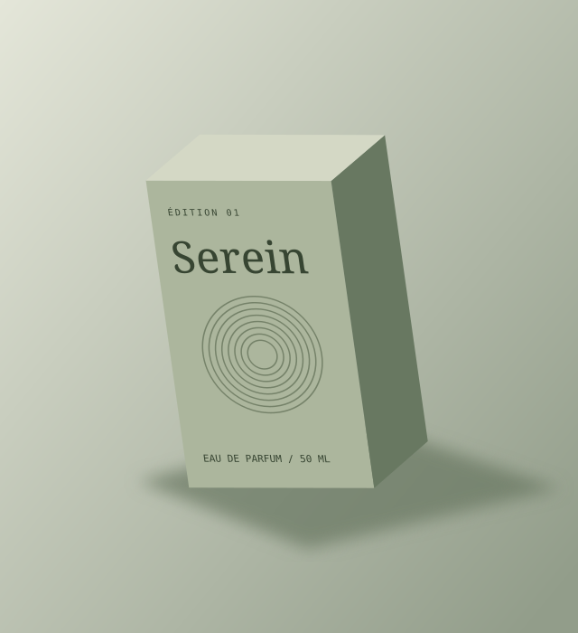
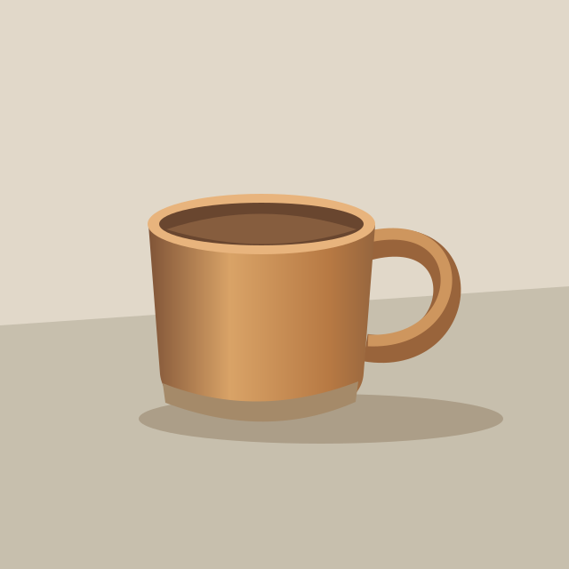
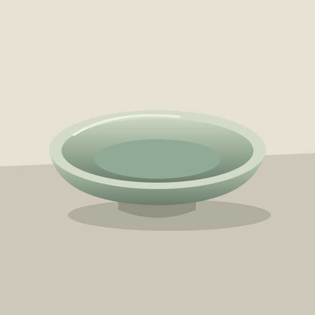

SR–01 / GLASS
SR–01 / GLASSThe amber flacon
A dark vessel and a pale label, balanced on a block of stone.
Object notes
The glass edge carries the brightest highlight. The label stays matte so the name can be read against the darker body.
Four objects arranged by material. Open the field notes for a closer look at each design. These are illustrated studio concepts, not items for sale.
SR–01 / GLASSA dark vessel and a pale label, balanced on a block of stone.
The glass edge carries the brightest highlight. The label stays matte so the name can be read against the darker body.

SR–02 / PAPERA folded sleeve translates the bottle's round profile into relief.
A shallow ring replaces a printed illustration. Side light reveals the impression without adding another ink to the sage surface.

LT–01 / STONEWAREA low handle keeps the silhouette close to the tabletop.
Honey glaze stops just above the foot, leaving a narrow band of bare clay. The dark opening in the handle echoes the oval at the lip.

LT–02 / CELADONA wide rim and a small foot lift a pool of green glaze off the table.
The broad lip leaves room for a thumb. A line of darker glaze gathers in the well, bringing its depth into view from above.